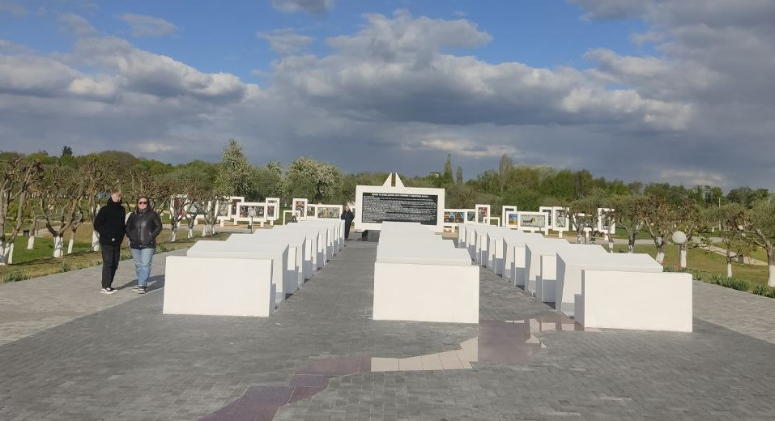

Мемориальный комплекс «Детям — жертвам войны»
Мемориальный комплекс «Детям — жертвам войны» расположен в агрогородке Красный Берег Жлобинского района Гомельской области, Беларусь. Он посвящён памяти детей, ставших жертвами нацистского режима во время Великой Отечественной войны, и был открыт 28 июня 2007 года.
Исторический контекст
Во время войны в Красном Береге находился один из крупнейших детских донорских концлагерей. Сюда свозили детей в возрасте от 8 до 14 лет, насильно отнятых у матерей в Жлобинском, Рогачёвском, Стрешинском, Добрушском и других районах. Детей подвергали медицинским экспериментам, забору крови и использовали в качестве рабочей силы. Многие из них погибли или были отправлены в Германию на каторжные работы.
Архитектурное решение
Мемориал спроектирован заслуженным архитектором Республики Беларусь Леонидом Левиным. Центром композиции является «Площадь Солнца», окружённая яблоневым садом. От площади расходятся аллеи-лучи, символизирующие свет и надежду. Один из лучей, «Луч Памяти», ведёт к «Мёртвому классу» — 21 белоснежной школьной парте и учительскому столу, на доске которого размещено предсмертное письмо 15-летней Кати Сусаниной, погибшей в фашистском рабстве. На тыльной стороне доски изображена карта Беларуси с отметками 16 концлагерей, где содержались дети.
За «Мёртвым классом» расположена «Площадь Солнца», где установлен белый парусник — символ мечт, которым не суждено было сбыться. Вокруг парусника размещены 24 белых стелы с детскими рисунками, выполненными в послевоенное время.
Музейная экспозиция
7 декабря 2024 года на территории мемориала открылся новый музейный комплекс площадью 765 м². В экспозиции используются современные технологии, включая сенсорные панели и мультимедиа. Посетители могут ознакомиться с документами, свидетельствующими о геноциде мирного населения Жлобинского района, и другими историческими материалами.
Мемориальный комплекс «Детям — жертвам войны» является филиалом Жлобинского историко-краеведческого музея.
Пройди тест для закрепления результата.
Тест